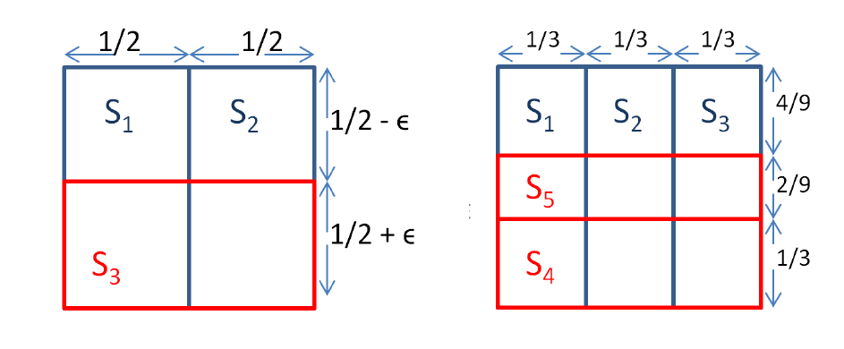

黄文睿
221180115 计算机拔尖班
该问题并非是难问题，存在朴素的 $O(QN)$ 的实现。但若对于编号的“最小”可以进行一定的宽松，可以获得复杂度更低的算法。
考虑近似率为 $\alpha$ 的算法，即允许输出的答案 $v'$ 满足 $v\le v'\le \alpha v$，此时可以使用“区间划分”的思想对问题进行简化。
若不考虑下取整，重复 $t$ 次上述步骤，下界序列为：
令 $low_t\le n$，有 $t\le\log_\alpha(\alpha(n-1)+1)$，故 $t=\Theta(\log_\alpha n)$. 于是至多进行 $\Theta(\log_\alpha n)$ 次该操作。
于是，问题转化为了，对至多 $\Theta(\log_\alpha n)$ 段形如 $[L, R]$ 的编号区间，对每个询问 $d_i(1\le i\le Q)$，判断是否存在 $v\in [L, R]$ 使得 $x_v+d_i$ 存在另一盏灯。
事实上，可以对所有 $d_i$ 一起处理：构造两个序列 $X_i$ 和 $Y_i$：
$$ Z_d=\sum_{1\le i, j\le V, j-i=d}X_iY_j. $$
可以将 $X$ 序列翻转，变成加法卷积：
其中，$i'=V-i+1, X_k' = X_{V+1-k}$。
而加法卷积可以使用快速傅里叶算法在 $\Theta(V\log V)$ 时间内计算。之后对每个询问 $d_i$，只需判断 $Z_{d_i}$ 是否为 $0$ 即可。
最朴素的算法为 $O(QN)$；
该算法在近似率为 $\alpha$ 的情况下，共至多运行 $O(\log_\alpha N)$ 轮区间 $[L, R]$ 的查询，单次复杂度为 $O(V\log V+Q)$，故总复杂度为 $O((V\log V+Q)\log_\alpha N)$。
对以下步骤进行 $k$ 轮：

如上图，可构造出近似率不高于 $\displaystyle 1-(1-\frac{1}{k})^k$ 的样例。
Theorem 1: 该贪心算法的近似率恰为 $\displaystyle(1-(1-\frac{1}{k})^k)$，故该近似率估计是紧的。
要证明 Theorem 1，先证明引理
Lemma: 设贪心算法选择出前 $i-1$ 个集合为 $S_{p_1}, S_{p_2}, \cdots, S_{p_{i-1}}$，它们覆盖了 $l$ 个元素，则第 $i$ 轮选择的 $A_i$ 会覆盖至少
$$ \frac{1}{k}(OPT-l) $$ 个新元素，$OPT$ 为最优解。
Proof: 假设该轮贪心算法可以直接取走 $k$ 个集合，则可以立即取到 $OPT$ 个元素，获得至少 $OPT-l$ 个新元素。故这 $k$ 个中至少有一个集合有至少 $\frac{1}{k}(OPT-l)$ 个新元素。
Theorem 1: 该贪心算法的近似率恰为 $\displaystyle(1-(1-\frac{1}{k})^k)$，故该近似率估计是紧的。
Proof:
设第 $i$ 轮共取了 $f_i$ 个元素，则有 $f_0=0$，且
$$ f_i\ge f_{i-1}+\frac{1}{k}(OPT-f_{i-1})=\frac{1}{k}OPT+(1-\frac{1}{k})f_{i-1}. $$
解递推式有
$$ f_{i}\ge OPT+(1-\frac{1}{k})^k(f_0-OPT)=OPT\cdot (1-(1-\frac{1}{k})^k). $$
故
$$ \frac{f_i}{OPT}\ge 1-(1-\frac{1}{k})^k $$ 近似率为 $\displaystyle \alpha=1-(1-\frac{1}{k})^k$.
Theorem 2: 在某些复杂度假设下，不存在有更优近似率的多项式复杂度算法。
[1] 2023 ICPC Hangzhou Regional Contest.
[2] CS 261: A Second Course in Algorithms, note: https://timroughgarden.org/w16/w16.html